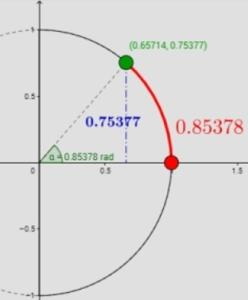
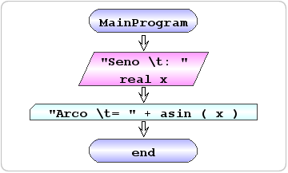

| Exercício | Dificuldade | Pontos | Data limite | Créditos |
|---|---|---|---|---|
| Ficha03_020 | Demonstration | 1.0 | (c)M@nso 2021 |
| Problema | Fluxograma | Algorithmi |
|---|---|---|
 |
 | begin MainProgram
read real x "Seno \t: "
write "Arco \t= " + asin(x)
end MainProgram
|
| Input | Output |
|---|---|